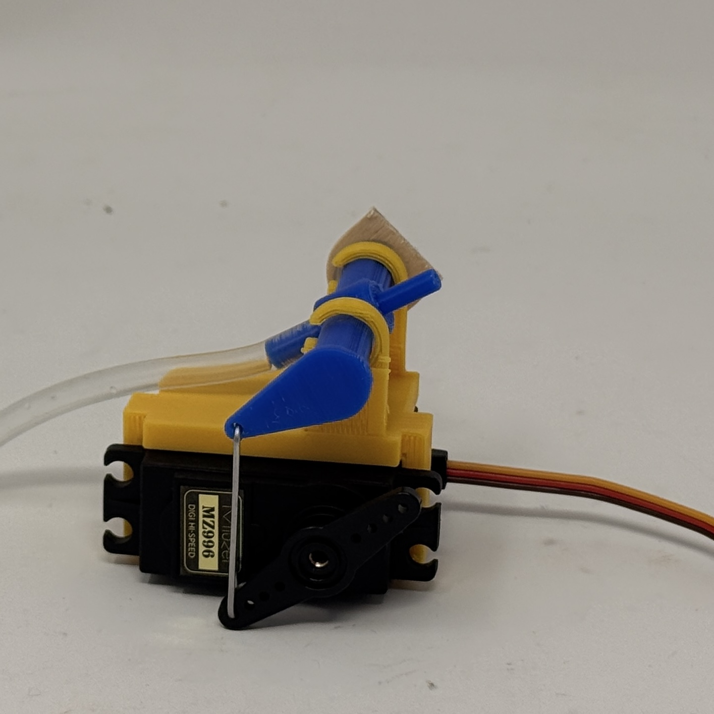
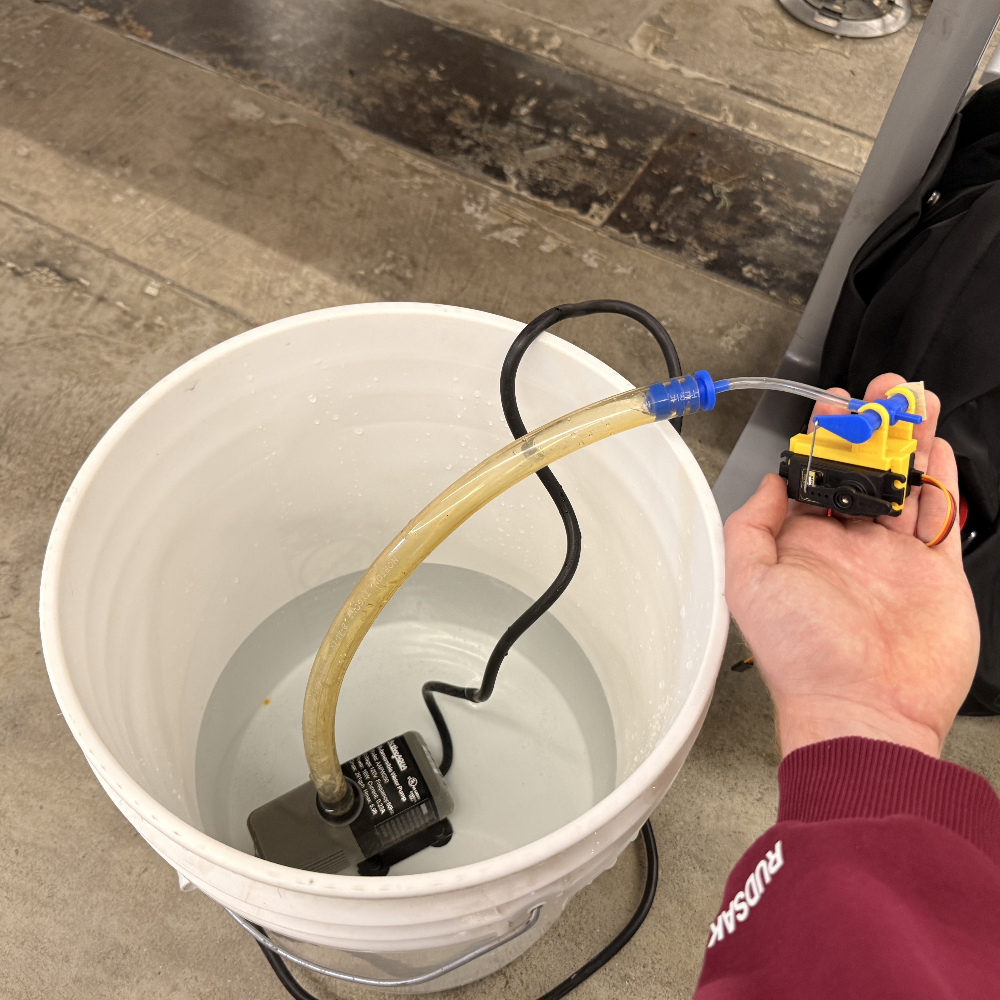
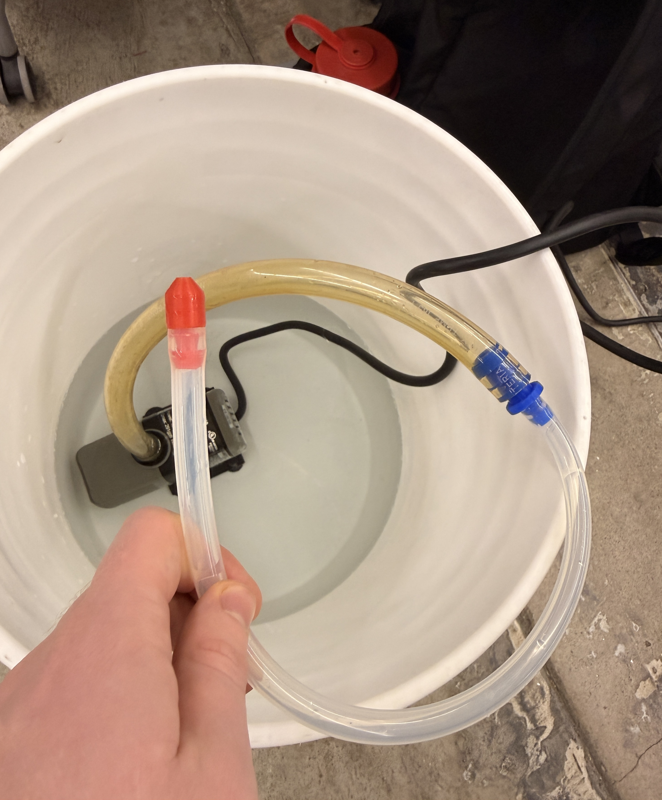
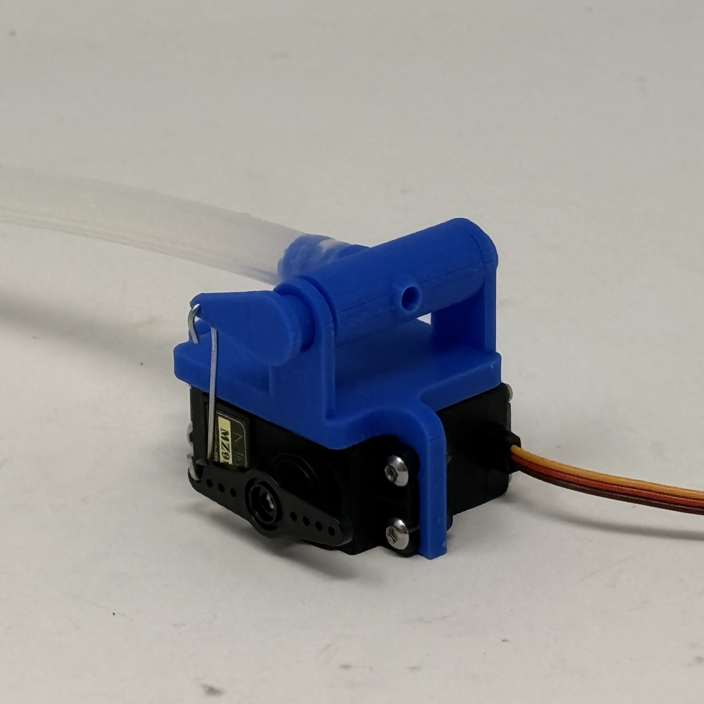
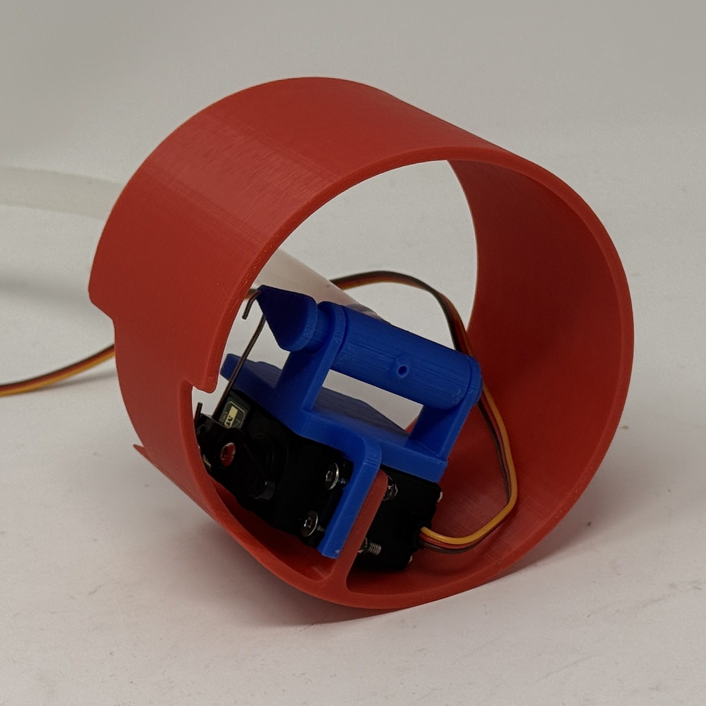
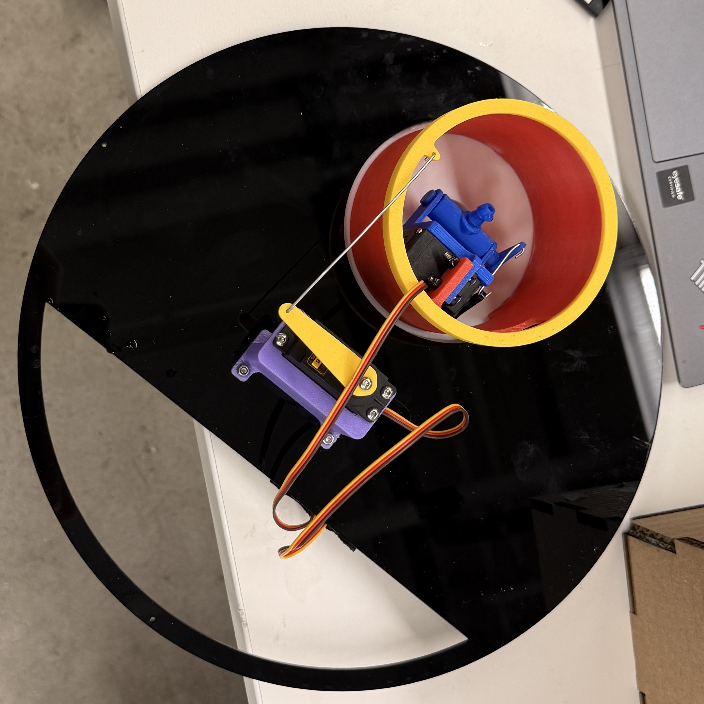
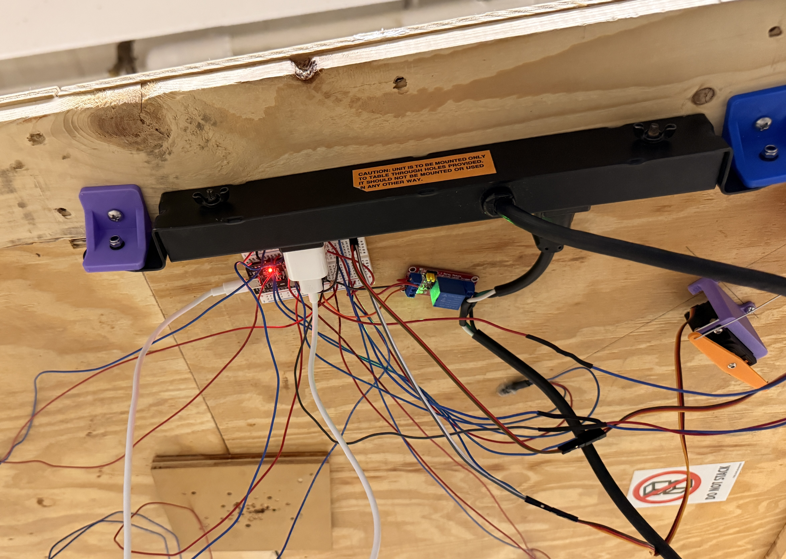

Harvard University PS70 Final Project Fall 2025 - Perfect score of 100%
Final Design Highlights
Testing various edge cases with the final product
Approach and Innovation
This project’s main goals were to look magical and to make drinking water more convenient. By using an array of sensors to detect where cups are and then plotting that location to the water cannon, the table shoots a stream of water in the air to refill all cups within the sensing area. Optimizing the nozzle to incorporate a flexible hose with a “goldilocks” stream width allowed for good accuracy when partnered with a relay to engage/disengage the water pump. Some helpful design elements: 3D printing all the parts allowed for rapid prototyping, strong neodymium magnets for the bottom of cups gave good readings on the hall effect sensor array, and local processing on the microcontroller allowed the system to run independently from laptops (helpful since laptops and water don’t mix well).







